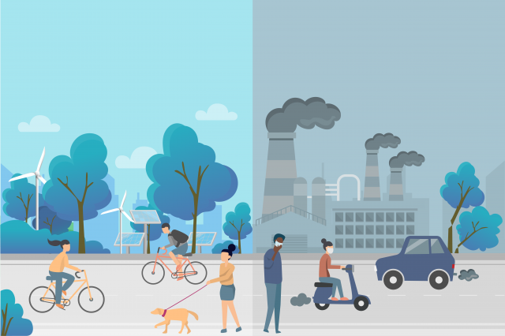

Air Quality Monitoring in Michigan Universities.

Poor air quality, characterized by high levels of pollutants like particulate matter, nitrogen dioxide, and ozone, can lead to serious health issues including respiratory infections, heart disease, stroke, and lung cancer. Beyond health, air quality also affects the environment by contributing to acid rain, harming wildlife, damaging forests, and deteriorating bodies of water. It can also exacerbate climate change by increasing the concentration of greenhouse gases in the atmosphere. Therefore, monitoring and improving air quality is crucial for safeguarding public health, protecting the environment, and ensuring a sustainable future for all living organisms.
As we observe from the line graph, the air quality levels at CMU, UMICH, and EMU show a noticeable increases as the day goes. These institutions should evaluate the necessary precautions and actions to mitigate potential health risks associated with deteriorating air quality.
In the bar graph, we can see that carbohydrate levels are high across all universities. This indicates that these institutions should implement precautions and strategies to address and manage this issue effectively.
The dominant pollutants are PM10, PM2.5, and O3. Particulate matter (PM) can be toxic to humans, primarily affecting the airways and lungs. It can cause various cardiovascular and respiratory issues, such as increased rates of myocardial infarction, ischemia, arrhythmia, deep vein thrombosis, and stroke. Additionally, PM can trigger oxidative stress and impair cell function.
If someone has any respiratory issues, they will receive recommendations to help them take necessary precautions and manage their health, ensuring they get the support they need to maintain their condition. This will be especially beneficial for athletes and individuals with lung or heart diseases, as the recommendations will already be tailored to address their specific needs.